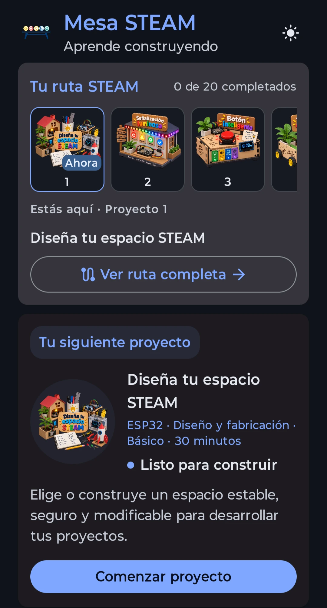
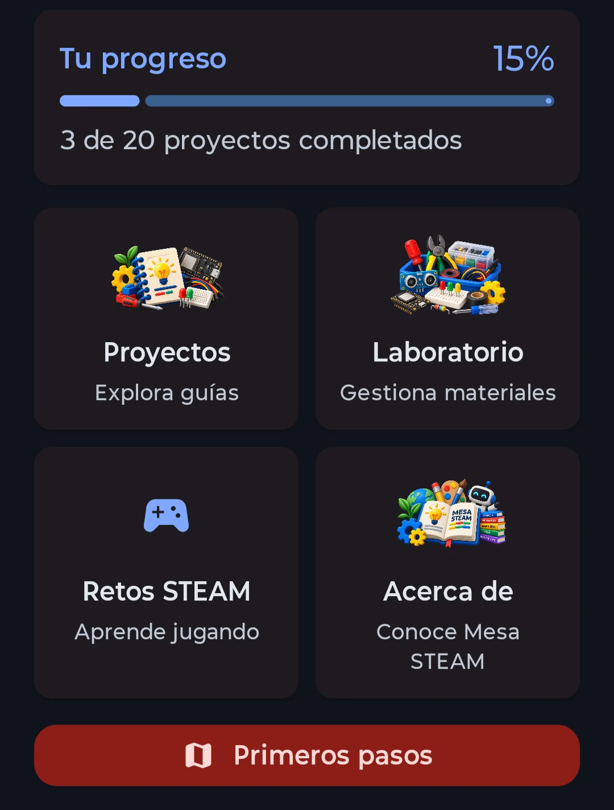
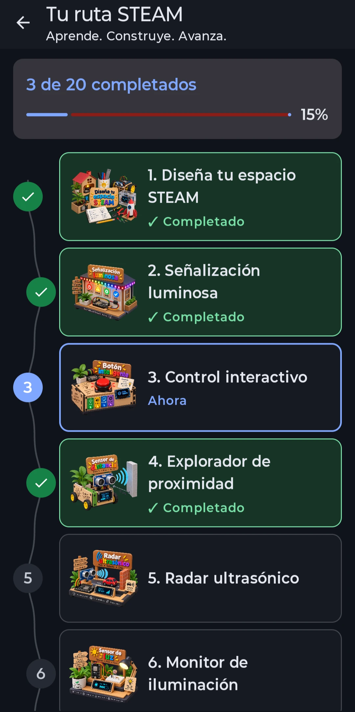
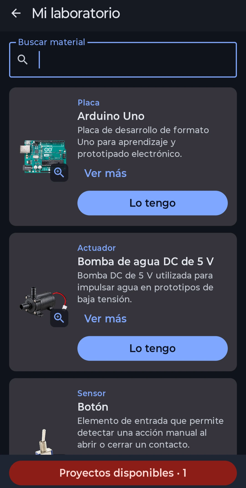

Proyectos guiados
Consulta materiales, conexiones, pasos, código y pruebas para avanzar en cada construcción.
Aplicación educativa
Aprende construyendo
Mesa STEAM es una aplicación educativa de desarrollo independiente orientada al aprendizaje práctico mediante proyectos guiados de programación, electrónica, automatización, robótica y tecnologías STEAM.
Recorre una ruta de 20 proyectos, organiza los materiales de tu laboratorio y consulta tu siguiente proyecto desde el inicio. Aprende a tu ritmo y lleva un registro de lo que vas completando.

Publicación oficial
Instala la aplicación desde su ficha oficial y comienza a explorar proyectos y retos educativos.
Aprendizaje práctico
Una herramienta para aprender tecnología mediante la construcción. Desde el inicio puedes consultar tu ruta, ver tu progreso y acceder a proyectos, materiales, retos y primeros pasos.
Consulta materiales, conexiones, pasos, código y pruebas para avanzar en cada construcción.
Busca placas, sensores y actuadores, consulta sus fichas y marca los materiales que tienes. Revisa qué proyectos puedes construir con ellos.
Recorre 20 proyectos y distingue los completados del proyecto actual. Consulta cuántos has terminado y tu porcentaje de avance.
Consulta desde el inicio el proyecto que sigue, su nivel, duración estimada, descripción y disponibilidad para comenzar a construir.
Aprende también sin materiales físicos mediante experiencias independientes y breves.
Elige el modo visual que prefieras y conserva tu selección en el dispositivo.
Cómo funciona
Aprender sin materiales físicos
Retos STEAM es una experiencia independiente dentro de la aplicación. Su primer minijuego publicado, Conductores y aislantes, propone clasificar materiales y comprender por qué permiten o impiden el paso de la corriente eléctrica.
Este primer reto complementa los proyectos de construcción y permite practicar conceptos desde el teléfono, incluso cuando no tienes componentes a mano.
Desarrollo independiente
La propuesta invita a observar, conectar, programar, probar y ajustar. Cada proyecto es una oportunidad para relacionar conceptos con objetos y resultados que puedes examinar directamente.
Mesa STEAM es una aplicación desarrollada de forma independiente para acercar el aprendizaje tecnológico a experiencias concretas, progresivas y accesibles.
Vista de la aplicación
Explora el inicio, el seguimiento de progreso, la ruta de proyectos y el catálogo de materiales. Selecciona una captura para ampliarla.



Disponible públicamente
La versión oficial para Android está disponible en Google Play. Instálala para explorar proyectos guiados, organizar tus materiales, avanzar por tu ruta y comenzar con el primer reto STEAM.
Descargar en Google PlayContacto
Si tienes preguntas sobre la aplicación, puedes escribir a lelyliliana@gmail.com.